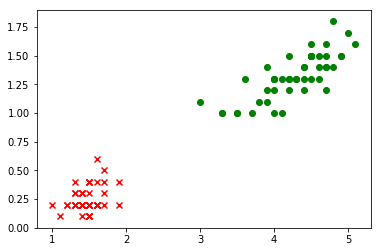

鸢尾花的二分类_V1.0
## 导包
import pandas as pd
import matplotlib.pyplot as plt
import numpy as np
import tensorflow as tf
from tensorflow.keras import layers
from sklearn.model_selection import train_test_split
epochs=300
1. 提出问题
根据处理好的数据集iris_bi.data.csv,进行两种鸢尾花setosa和versicolor的分类。
2.导入新的数据集
datasets_path = 'data/iris_bi.data.csv'
iris = pd.read_csv(datasets_path,header=None)
print(iris.sample(5))
0 1 2
33 1.4 0.2 0
48 1.5 0.2 0
26 1.6 0.4 0
3 1.5 0.2 0
77 5.0 1.7 1
# 转换为np.array
iris = np.array(iris)
print(type(iris))
print(iris.shape)
<class 'numpy.ndarray'>
(100, 3)
# 可视化
plt.scatter(iris[:49,0],iris[:49,1],marker='x',c='red')
plt.scatter(iris[50:99,0],iris[50:99,1],marker='o',c='green')
<matplotlib.collections.PathCollection at 0x144be6400>

# 拆分特征和标签
iris_X = iris[:,0:2]
iris_y = iris[:,-1]
print("特征集的形状：" + str(iris_X.shape))
print("标签集的形状：" + str(iris_y.shape))
特征集的形状：(100, 2)
标签集的形状：(100,)
# 拆分训练集和测试集
X_train,X_test,y_train,y_test = train_test_split(iris_X,iris_y,test_size=0.25)
print("训练特征集的形状：" + str(X_train.shape))
print("训练标签集的形状：" + str(y_train.shape))
print("测试特征集的形状：" + str(X_test.shape))
print("测试标签集的形状：" + str(y_test.shape))
训练特征集的形状：(75, 2)
训练标签集的形状：(75,)
测试特征集的形状：(25, 2)
测试标签集的形状：(25,)
3.训练模型
# 搭建模型
model = tf.keras.Sequential()
model.add(tf.keras.layers.Dense(units=1, input_dim=2,activation="sigmoid"))
model.summary() # 查看模型结构
Model: "sequential_19"
_________________________________________________________________
Layer (type) Output Shape Param #
=================================================================
dense_19 (Dense) (None, 1) 3
=================================================================
Total params: 3
Trainable params: 3
Non-trainable params: 0
_________________________________________________________________
# 编译模型
model.compile(optimizer='sgd', loss='binary_crossentropy',metrics=['accuracy'])
history=model.fit(X_train, y_train, epochs=epochs)
Epoch 1/300
3/3 [==============================] - 0s 2ms/step - loss: 0.5574 - accuracy: 0.4933
Epoch 2/300
3/3 [==============================] - 0s 4ms/step - loss: 0.5556 - accuracy: 0.4933
Epoch 3/300
3/3 [==============================] - 0s 3ms/step - loss: 0.5544 - accuracy: 0.4933
Epoch 4/300
3/3 [==============================] - 0s 3ms/step - loss: 0.5525 - accuracy: 0.4933
Epoch 5/300
3/3 [==============================] - 0s 4ms/step - loss: 0.5507 - accuracy: 0.4933
Epoch 6/300
3/3 [==============================] - 0s 2ms/step - loss: 0.5488 - accuracy: 0.4933
Epoch 7/300
3/3 [==============================] - 0s 3ms/step - loss: 0.5475 - accuracy: 0.4933
Epoch 8/300
3/3 [==============================] - 0s 2ms/step - loss: 0.5462 - accuracy: 0.4933
Epoch 9/300
3/3 [==============================] - 0s 2ms/step - loss: 0.5447 - accuracy: 0.4933
Epoch 10/300
3/3 [==============================] - 0s 28ms/step - loss: 0.5435 - accuracy: 0.4933
Epoch 11/300
3/3 [==============================] - 0s 4ms/step - loss: 0.5425 - accuracy: 0.4933
Epoch 12/300
3/3 [==============================] - 0s 7ms/step - loss: 0.5409 - accuracy: 0.4933
Epoch 13/300
3/3 [==============================] - 0s 3ms/step - loss: 0.5394 - accuracy: 0.4933
Epoch 14/300
3/3 [==============================] - 0s 4ms/step - loss: 0.5381 - accuracy: 0.4933
Epoch 15/300
3/3 [==============================] - 0s 6ms/step - loss: 0.5366 - accuracy: 0.4933
Epoch 16/300
3/3 [==============================] - 0s 6ms/step - loss: 0.5353 - accuracy: 0.4933
Epoch 17/300
3/3 [==============================] - 0s 2ms/step - loss: 0.5341 - accuracy: 0.4933
Epoch 18/300
3/3 [==============================] - 0s 3ms/step - loss: 0.5330 - accuracy: 0.4933
Epoch 19/300
3/3 [==============================] - 0s 5ms/step - loss: 0.5319 - accuracy: 0.4933
Epoch 20/300
3/3 [==============================] - 0s 3ms/step - loss: 0.5312 - accuracy: 0.4933
Epoch 21/300
3/3 [==============================] - 0s 7ms/step - loss: 0.5292 - accuracy: 0.4933
Epoch 22/300
3/3 [==============================] - 0s 4ms/step - loss: 0.5280 - accuracy: 0.4933
Epoch 23/300
3/3 [==============================] - 0s 6ms/step - loss: 0.5269 - accuracy: 0.4933
Epoch 24/300
3/3 [==============================] - 0s 5ms/step - loss: 0.5257 - accuracy: 0.4933
Epoch 25/300
3/3 [==============================] - 0s 3ms/step - loss: 0.5247 - accuracy: 0.4933
Epoch 26/300
3/3 [==============================] - 0s 2ms/step - loss: 0.5236 - accuracy: 0.4933
Epoch 27/300
3/3 [==============================] - 0s 3ms/step - loss: 0.5227 - accuracy: 0.4933
Epoch 28/300
3/3 [==============================] - 0s 2ms/step - loss: 0.5215 - accuracy: 0.4933
Epoch 29/300
3/3 [==============================] - 0s 7ms/step - loss: 0.5205 - accuracy: 0.4933
Epoch 30/300
3/3 [==============================] - 0s 3ms/step - loss: 0.5195 - accuracy: 0.4933
Epoch 31/300
3/3 [==============================] - 0s 4ms/step - loss: 0.5186 - accuracy: 0.4933
Epoch 32/300
3/3 [==============================] - 0s 4ms/step - loss: 0.5176 - accuracy: 0.4933
Epoch 33/300
3/3 [==============================] - 0s 5ms/step - loss: 0.5166 - accuracy: 0.4933
Epoch 34/300
3/3 [==============================] - ETA: 0s - loss: 0.6021 - accuracy: 0.34 - 0s 5ms/step - loss: 0.5158 - accuracy: 0.4933
Epoch 35/300
3/3 [==============================] - 0s 6ms/step - loss: 0.5145 - accuracy: 0.4933
Epoch 36/300
3/3 [==============================] - 0s 4ms/step - loss: 0.5133 - accuracy: 0.4933
Epoch 37/300
3/3 [==============================] - 0s 6ms/step - loss: 0.5124 - accuracy: 0.4933
Epoch 38/300
3/3 [==============================] - 0s 4ms/step - loss: 0.5114 - accuracy: 0.4933
Epoch 39/300
3/3 [==============================] - 0s 2ms/step - loss: 0.5105 - accuracy: 0.4933
Epoch 40/300
3/3 [==============================] - 0s 5ms/step - loss: 0.5092 - accuracy: 0.5067
Epoch 41/300
3/3 [==============================] - 0s 3ms/step - loss: 0.5083 - accuracy: 0.5067
Epoch 42/300
3/3 [==============================] - 0s 4ms/step - loss: 0.5074 - accuracy: 0.5067
Epoch 43/300
3/3 [==============================] - 0s 4ms/step - loss: 0.5065 - accuracy: 0.5067
Epoch 44/300
3/3 [==============================] - ETA: 0s - loss: 0.5261 - accuracy: 0.46 - 0s 4ms/step - loss: 0.5055 - accuracy: 0.5067
Epoch 45/300
3/3 [==============================] - 0s 3ms/step - loss: 0.5046 - accuracy: 0.5067
Epoch 46/300
3/3 [==============================] - 0s 5ms/step - loss: 0.5038 - accuracy: 0.5067
Epoch 47/300
3/3 [==============================] - 0s 4ms/step - loss: 0.5026 - accuracy: 0.5067
Epoch 48/300
3/3 [==============================] - 0s 6ms/step - loss: 0.5016 - accuracy: 0.5067
Epoch 49/300
3/3 [==============================] - 0s 7ms/step - loss: 0.5006 - accuracy: 0.5067
Epoch 50/300
3/3 [==============================] - 0s 5ms/step - loss: 0.4996 - accuracy: 0.5067
Epoch 51/300
3/3 [==============================] - 0s 3ms/step - loss: 0.4986 - accuracy: 0.5067
Epoch 52/300
3/3 [==============================] - 0s 4ms/step - loss: 0.4975 - accuracy: 0.5333
Epoch 53/300
3/3 [==============================] - 0s 4ms/step - loss: 0.4965 - accuracy: 0.5333
Epoch 54/300
3/3 [==============================] - 0s 3ms/step - loss: 0.4955 - accuracy: 0.5333
Epoch 55/300
3/3 [==============================] - 0s 5ms/step - loss: 0.4945 - accuracy: 0.5333
Epoch 56/300
3/3 [==============================] - 0s 5ms/step - loss: 0.4935 - accuracy: 0.5467
Epoch 57/300
3/3 [==============================] - 0s 8ms/step - loss: 0.4925 - accuracy: 0.5467
Epoch 58/300
3/3 [==============================] - 0s 4ms/step - loss: 0.4916 - accuracy: 0.5467
Epoch 59/300
3/3 [==============================] - 0s 3ms/step - loss: 0.4908 - accuracy: 0.5467
Epoch 60/300
3/3 [==============================] - 0s 3ms/step - loss: 0.4897 - accuracy: 0.5467
Epoch 61/300
3/3 [==============================] - 0s 9ms/step - loss: 0.4888 - accuracy: 0.5467
Epoch 62/300
3/3 [==============================] - 0s 7ms/step - loss: 0.4877 - accuracy: 0.5600
Epoch 63/300
3/3 [==============================] - 0s 3ms/step - loss: 0.4868 - accuracy: 0.5600
Epoch 64/300
3/3 [==============================] - 0s 7ms/step - loss: 0.4861 - accuracy: 0.5600
Epoch 65/300
3/3 [==============================] - 0s 2ms/step - loss: 0.4849 - accuracy: 0.5867
Epoch 66/300
3/3 [==============================] - 0s 3ms/step - loss: 0.4841 - accuracy: 0.5600
Epoch 67/300
3/3 [==============================] - 0s 4ms/step - loss: 0.4831 - accuracy: 0.6000
Epoch 68/300
3/3 [==============================] - 0s 2ms/step - loss: 0.4822 - accuracy: 0.6000
Epoch 69/300
3/3 [==============================] - 0s 3ms/step - loss: 0.4813 - accuracy: 0.6000
Epoch 70/300
3/3 [==============================] - 0s 5ms/step - loss: 0.4806 - accuracy: 0.6000
Epoch 71/300
3/3 [==============================] - 0s 3ms/step - loss: 0.4795 - accuracy: 0.6667
Epoch 72/300
3/3 [==============================] - 0s 2ms/step - loss: 0.4785 - accuracy: 0.6667
Epoch 73/300
3/3 [==============================] - 0s 6ms/step - loss: 0.4775 - accuracy: 0.6667
Epoch 74/300
3/3 [==============================] - 0s 3ms/step - loss: 0.4766 - accuracy: 0.6667
Epoch 75/300
3/3 [==============================] - 0s 3ms/step - loss: 0.4757 - accuracy: 0.6667
Epoch 76/300
3/3 [==============================] - 0s 4ms/step - loss: 0.4749 - accuracy: 0.6667
Epoch 77/300
3/3 [==============================] - 0s 3ms/step - loss: 0.4742 - accuracy: 0.7333
Epoch 78/300
3/3 [==============================] - 0s 3ms/step - loss: 0.4731 - accuracy: 0.7333
Epoch 79/300
3/3 [==============================] - 0s 3ms/step - loss: 0.4721 - accuracy: 0.7333
Epoch 80/300
3/3 [==============================] - 0s 3ms/step - loss: 0.4712 - accuracy: 0.7333
Epoch 81/300
3/3 [==============================] - 0s 2ms/step - loss: 0.4704 - accuracy: 0.7867
Epoch 82/300
3/3 [==============================] - 0s 3ms/step - loss: 0.4695 - accuracy: 0.7867
Epoch 83/300
3/3 [==============================] - 0s 9ms/step - loss: 0.4686 - accuracy: 0.7867
Epoch 84/300
3/3 [==============================] - 0s 6ms/step - loss: 0.4678 - accuracy: 0.7867
Epoch 85/300
3/3 [==============================] - 0s 3ms/step - loss: 0.4669 - accuracy: 0.7867
Epoch 86/300
3/3 [==============================] - 0s 2ms/step - loss: 0.4661 - accuracy: 0.7867
Epoch 87/300
3/3 [==============================] - 0s 8ms/step - loss: 0.4654 - accuracy: 0.7867
Epoch 88/300
3/3 [==============================] - 0s 3ms/step - loss: 0.4642 - accuracy: 0.7867
Epoch 89/300
3/3 [==============================] - 0s 4ms/step - loss: 0.4634 - accuracy: 0.8000
Epoch 90/300
3/3 [==============================] - 0s 3ms/step - loss: 0.4625 - accuracy: 0.8000
Epoch 91/300
3/3 [==============================] - 0s 3ms/step - loss: 0.4616 - accuracy: 0.8000
Epoch 92/300
3/3 [==============================] - 0s 4ms/step - loss: 0.4609 - accuracy: 0.8000
Epoch 93/300
3/3 [==============================] - 0s 2ms/step - loss: 0.4601 - accuracy: 0.8000
Epoch 94/300
3/3 [==============================] - 0s 7ms/step - loss: 0.4592 - accuracy: 0.8000
Epoch 95/300
3/3 [==============================] - 0s 4ms/step - loss: 0.4584 - accuracy: 0.8000
Epoch 96/300
3/3 [==============================] - 0s 4ms/step - loss: 0.4577 - accuracy: 0.8000
Epoch 97/300
3/3 [==============================] - 0s 3ms/step - loss: 0.4568 - accuracy: 0.8000
Epoch 98/300
3/3 [==============================] - 0s 3ms/step - loss: 0.4559 - accuracy: 0.8000
Epoch 99/300
3/3 [==============================] - 0s 4ms/step - loss: 0.4550 - accuracy: 0.8000
Epoch 100/300
3/3 [==============================] - 0s 2ms/step - loss: 0.4541 - accuracy: 0.8267
Epoch 101/300
3/3 [==============================] - 0s 2ms/step - loss: 0.4532 - accuracy: 0.8667
Epoch 102/300
3/3 [==============================] - 0s 2ms/step - loss: 0.4523 - accuracy: 0.8400
Epoch 103/300
3/3 [==============================] - 0s 10ms/step - loss: 0.4515 - accuracy: 0.8800
Epoch 104/300
3/3 [==============================] - 0s 2ms/step - loss: 0.4506 - accuracy: 0.8800
Epoch 105/300
3/3 [==============================] - 0s 4ms/step - loss: 0.4498 - accuracy: 0.8800
Epoch 106/300
3/3 [==============================] - 0s 3ms/step - loss: 0.4490 - accuracy: 0.8800
Epoch 107/300
3/3 [==============================] - 0s 4ms/step - loss: 0.4481 - accuracy: 0.8933
Epoch 108/300
3/3 [==============================] - 0s 4ms/step - loss: 0.4473 - accuracy: 0.8933
Epoch 109/300
3/3 [==============================] - 0s 3ms/step - loss: 0.4465 - accuracy: 0.8933
Epoch 110/300
3/3 [==============================] - 0s 3ms/step - loss: 0.4458 - accuracy: 0.8933
Epoch 111/300
3/3 [==============================] - 0s 4ms/step - loss: 0.4449 - accuracy: 0.8933
Epoch 112/300
3/3 [==============================] - 0s 4ms/step - loss: 0.4440 - accuracy: 0.8933
Epoch 113/300
3/3 [==============================] - 0s 5ms/step - loss: 0.4432 - accuracy: 0.8933
Epoch 114/300
3/3 [==============================] - 0s 4ms/step - loss: 0.4424 - accuracy: 0.8933
Epoch 115/300
3/3 [==============================] - 0s 5ms/step - loss: 0.4415 - accuracy: 0.8933
Epoch 116/300
3/3 [==============================] - 0s 4ms/step - loss: 0.4407 - accuracy: 0.8933
Epoch 117/300
3/3 [==============================] - 0s 5ms/step - loss: 0.4399 - accuracy: 0.8933
Epoch 118/300
3/3 [==============================] - 0s 2ms/step - loss: 0.4391 - accuracy: 0.8933
Epoch 119/300
3/3 [==============================] - 0s 4ms/step - loss: 0.4383 - accuracy: 0.8933
Epoch 120/300
3/3 [==============================] - 0s 3ms/step - loss: 0.4376 - accuracy: 0.8933
Epoch 121/300
3/3 [==============================] - 0s 2ms/step - loss: 0.4368 - accuracy: 0.8933
Epoch 122/300
3/3 [==============================] - 0s 4ms/step - loss: 0.4364 - accuracy: 0.9067
Epoch 123/300
3/3 [==============================] - 0s 4ms/step - loss: 0.4352 - accuracy: 0.9067
Epoch 124/300
3/3 [==============================] - 0s 3ms/step - loss: 0.4343 - accuracy: 0.9067
Epoch 125/300
3/3 [==============================] - 0s 4ms/step - loss: 0.4336 - accuracy: 0.9067
Epoch 126/300
3/3 [==============================] - 0s 4ms/step - loss: 0.4328 - accuracy: 0.9067
Epoch 127/300
3/3 [==============================] - 0s 4ms/step - loss: 0.4320 - accuracy: 0.9067
Epoch 128/300
3/3 [==============================] - 0s 3ms/step - loss: 0.4313 - accuracy: 0.9067
Epoch 129/300
3/3 [==============================] - 0s 4ms/step - loss: 0.4305 - accuracy: 0.9067
Epoch 130/300
3/3 [==============================] - 0s 10ms/step - loss: 0.4297 - accuracy: 0.9067
Epoch 131/300
3/3 [==============================] - 0s 3ms/step - loss: 0.4289 - accuracy: 0.9067
Epoch 132/300
3/3 [==============================] - 0s 3ms/step - loss: 0.4283 - accuracy: 0.9067
Epoch 133/300
3/3 [==============================] - 0s 3ms/step - loss: 0.4274 - accuracy: 0.9067
Epoch 134/300
3/3 [==============================] - 0s 3ms/step - loss: 0.4266 - accuracy: 0.9067
Epoch 135/300
3/3 [==============================] - 0s 4ms/step - loss: 0.4258 - accuracy: 0.9067
Epoch 136/300
3/3 [==============================] - 0s 2ms/step - loss: 0.4250 - accuracy: 0.9067
Epoch 137/300
3/3 [==============================] - 0s 2ms/step - loss: 0.4242 - accuracy: 0.9067
Epoch 138/300
3/3 [==============================] - 0s 3ms/step - loss: 0.4235 - accuracy: 0.9067
Epoch 139/300
3/3 [==============================] - 0s 2ms/step - loss: 0.4227 - accuracy: 0.9067
Epoch 140/300
3/3 [==============================] - 0s 4ms/step - loss: 0.4220 - accuracy: 0.9067
Epoch 141/300
3/3 [==============================] - 0s 3ms/step - loss: 0.4214 - accuracy: 0.9067
Epoch 142/300
3/3 [==============================] - 0s 2ms/step - loss: 0.4205 - accuracy: 0.9067
Epoch 143/300
3/3 [==============================] - 0s 3ms/step - loss: 0.4199 - accuracy: 0.9067
Epoch 144/300
3/3 [==============================] - 0s 4ms/step - loss: 0.4193 - accuracy: 0.9067
Epoch 145/300
3/3 [==============================] - 0s 6ms/step - loss: 0.4185 - accuracy: 0.9067
Epoch 146/300
3/3 [==============================] - 0s 3ms/step - loss: 0.4177 - accuracy: 0.9067
Epoch 147/300
3/3 [==============================] - 0s 6ms/step - loss: 0.4168 - accuracy: 0.9067
Epoch 148/300
3/3 [==============================] - 0s 5ms/step - loss: 0.4161 - accuracy: 0.9067
Epoch 149/300
3/3 [==============================] - 0s 7ms/step - loss: 0.4153 - accuracy: 0.9467
Epoch 150/300
3/3 [==============================] - 0s 5ms/step - loss: 0.4146 - accuracy: 0.9467
Epoch 151/300
3/3 [==============================] - 0s 5ms/step - loss: 0.4138 - accuracy: 0.9467
Epoch 152/300
3/3 [==============================] - 0s 6ms/step - loss: 0.4131 - accuracy: 0.9467
Epoch 153/300
3/3 [==============================] - 0s 3ms/step - loss: 0.4124 - accuracy: 0.9467
Epoch 154/300
3/3 [==============================] - 0s 4ms/step - loss: 0.4116 - accuracy: 0.9467
Epoch 155/300
3/3 [==============================] - 0s 7ms/step - loss: 0.4109 - accuracy: 0.9467
Epoch 156/300
3/3 [==============================] - 0s 6ms/step - loss: 0.4102 - accuracy: 0.9600
Epoch 157/300
3/3 [==============================] - 0s 3ms/step - loss: 0.4096 - accuracy: 0.9600
Epoch 158/300
3/3 [==============================] - 0s 5ms/step - loss: 0.4088 - accuracy: 0.9600
Epoch 159/300
3/3 [==============================] - 0s 3ms/step - loss: 0.4081 - accuracy: 0.9600
Epoch 160/300
3/3 [==============================] - 0s 2ms/step - loss: 0.4073 - accuracy: 0.9600
Epoch 161/300
3/3 [==============================] - 0s 3ms/step - loss: 0.4066 - accuracy: 0.9600
Epoch 162/300
3/3 [==============================] - 0s 2ms/step - loss: 0.4059 - accuracy: 0.9600
Epoch 163/300
3/3 [==============================] - 0s 3ms/step - loss: 0.4051 - accuracy: 0.9600
Epoch 164/300
3/3 [==============================] - 0s 5ms/step - loss: 0.4045 - accuracy: 0.9733
Epoch 165/300
3/3 [==============================] - 0s 2ms/step - loss: 0.4038 - accuracy: 0.9600
Epoch 166/300
3/3 [==============================] - 0s 4ms/step - loss: 0.4031 - accuracy: 0.9600
Epoch 167/300
3/3 [==============================] - 0s 5ms/step - loss: 0.4026 - accuracy: 0.9600
Epoch 168/300
3/3 [==============================] - 0s 3ms/step - loss: 0.4018 - accuracy: 0.9733
Epoch 169/300
3/3 [==============================] - 0s 4ms/step - loss: 0.4010 - accuracy: 0.9733
Epoch 170/300
3/3 [==============================] - 0s 3ms/step - loss: 0.4003 - accuracy: 0.9733
Epoch 171/300
3/3 [==============================] - 0s 9ms/step - loss: 0.3996 - accuracy: 0.9733
Epoch 172/300
3/3 [==============================] - 0s 3ms/step - loss: 0.3989 - accuracy: 0.9733
Epoch 173/300
3/3 [==============================] - 0s 4ms/step - loss: 0.3982 - accuracy: 0.9733
Epoch 174/300
3/3 [==============================] - 0s 4ms/step - loss: 0.3976 - accuracy: 0.9733
Epoch 175/300
3/3 [==============================] - 0s 9ms/step - loss: 0.3969 - accuracy: 0.9733
Epoch 176/300
3/3 [==============================] - 0s 5ms/step - loss: 0.3962 - accuracy: 0.9733
Epoch 177/300
3/3 [==============================] - 0s 7ms/step - loss: 0.3956 - accuracy: 0.9733
Epoch 178/300
3/3 [==============================] - 0s 5ms/step - loss: 0.3952 - accuracy: 0.9733
Epoch 179/300
3/3 [==============================] - 0s 5ms/step - loss: 0.3944 - accuracy: 0.9733
Epoch 180/300
3/3 [==============================] - 0s 4ms/step - loss: 0.3937 - accuracy: 0.9733
Epoch 181/300
3/3 [==============================] - 0s 3ms/step - loss: 0.3929 - accuracy: 0.9733
Epoch 182/300
3/3 [==============================] - 0s 4ms/step - loss: 0.3923 - accuracy: 0.9733
Epoch 183/300
3/3 [==============================] - 0s 4ms/step - loss: 0.3915 - accuracy: 0.9733
Epoch 184/300
3/3 [==============================] - 0s 4ms/step - loss: 0.3908 - accuracy: 0.9733
Epoch 185/300
3/3 [==============================] - 0s 4ms/step - loss: 0.3901 - accuracy: 0.9733
Epoch 186/300
3/3 [==============================] - 0s 3ms/step - loss: 0.3895 - accuracy: 0.9733
Epoch 187/300
3/3 [==============================] - 0s 3ms/step - loss: 0.3889 - accuracy: 0.9733
Epoch 188/300
3/3 [==============================] - 0s 2ms/step - loss: 0.3882 - accuracy: 0.9733
Epoch 189/300
3/3 [==============================] - 0s 3ms/step - loss: 0.3875 - accuracy: 0.9733
Epoch 190/300
3/3 [==============================] - 0s 5ms/step - loss: 0.3869 - accuracy: 0.9733
Epoch 191/300
3/3 [==============================] - 0s 4ms/step - loss: 0.3863 - accuracy: 0.9733
Epoch 192/300
3/3 [==============================] - 0s 3ms/step - loss: 0.3856 - accuracy: 0.9733
Epoch 193/300
3/3 [==============================] - 0s 5ms/step - loss: 0.3850 - accuracy: 0.9733
Epoch 194/300
3/3 [==============================] - 0s 6ms/step - loss: 0.3843 - accuracy: 0.9733
Epoch 195/300
3/3 [==============================] - 0s 3ms/step - loss: 0.3837 - accuracy: 0.9733
Epoch 196/300
3/3 [==============================] - 0s 6ms/step - loss: 0.3831 - accuracy: 0.9733
Epoch 197/300
3/3 [==============================] - 0s 4ms/step - loss: 0.3823 - accuracy: 0.9733
Epoch 198/300
3/3 [==============================] - 0s 6ms/step - loss: 0.3817 - accuracy: 0.9733
Epoch 199/300
3/3 [==============================] - 0s 3ms/step - loss: 0.3812 - accuracy: 0.9733
Epoch 200/300
3/3 [==============================] - 0s 2ms/step - loss: 0.3804 - accuracy: 0.9733
Epoch 201/300
3/3 [==============================] - 0s 3ms/step - loss: 0.3798 - accuracy: 0.9733
Epoch 202/300
3/3 [==============================] - 0s 2ms/step - loss: 0.3793 - accuracy: 0.9733
Epoch 203/300
3/3 [==============================] - 0s 2ms/step - loss: 0.3786 - accuracy: 0.9733
Epoch 204/300
3/3 [==============================] - ETA: 0s - loss: 0.3737 - accuracy: 1.00 - 0s 2ms/step - loss: 0.3779 - accuracy: 0.9733
Epoch 205/300
3/3 [==============================] - 0s 4ms/step - loss: 0.3774 - accuracy: 0.9733
Epoch 206/300
3/3 [==============================] - 0s 4ms/step - loss: 0.3766 - accuracy: 0.9733
Epoch 207/300
3/3 [==============================] - 0s 3ms/step - loss: 0.3761 - accuracy: 0.9733
Epoch 208/300
3/3 [==============================] - 0s 7ms/step - loss: 0.3755 - accuracy: 0.9733
Epoch 209/300
3/3 [==============================] - 0s 6ms/step - loss: 0.3749 - accuracy: 0.9733
Epoch 210/300
3/3 [==============================] - 0s 4ms/step - loss: 0.3742 - accuracy: 0.9733
Epoch 211/300
3/3 [==============================] - 0s 6ms/step - loss: 0.3737 - accuracy: 0.9733
Epoch 212/300
3/3 [==============================] - 0s 3ms/step - loss: 0.3730 - accuracy: 0.9733
Epoch 213/300
3/3 [==============================] - 0s 2ms/step - loss: 0.3724 - accuracy: 0.9733
Epoch 214/300
3/3 [==============================] - 0s 2ms/step - loss: 0.3718 - accuracy: 0.9733
Epoch 215/300
3/3 [==============================] - 0s 4ms/step - loss: 0.3712 - accuracy: 0.9733
Epoch 216/300
3/3 [==============================] - 0s 4ms/step - loss: 0.3705 - accuracy: 0.9733
Epoch 217/300
3/3 [==============================] - 0s 5ms/step - loss: 0.3699 - accuracy: 0.9733
Epoch 218/300
3/3 [==============================] - 0s 5ms/step - loss: 0.3694 - accuracy: 0.9733
Epoch 219/300
3/3 [==============================] - 0s 7ms/step - loss: 0.3687 - accuracy: 0.9733
Epoch 220/300
3/3 [==============================] - 0s 3ms/step - loss: 0.3681 - accuracy: 0.9733
Epoch 221/300
3/3 [==============================] - 0s 4ms/step - loss: 0.3677 - accuracy: 0.9733
Epoch 222/300
3/3 [==============================] - 0s 3ms/step - loss: 0.3670 - accuracy: 0.9733
Epoch 223/300
3/3 [==============================] - 0s 5ms/step - loss: 0.3664 - accuracy: 0.9733
Epoch 224/300
3/3 [==============================] - 0s 9ms/step - loss: 0.3658 - accuracy: 0.9733
Epoch 225/300
3/3 [==============================] - 0s 3ms/step - loss: 0.3652 - accuracy: 0.9733
Epoch 226/300
3/3 [==============================] - 0s 3ms/step - loss: 0.3646 - accuracy: 0.9733
Epoch 227/300
3/3 [==============================] - 0s 4ms/step - loss: 0.3640 - accuracy: 0.9733
Epoch 228/300
3/3 [==============================] - 0s 3ms/step - loss: 0.3634 - accuracy: 0.9733
Epoch 229/300
3/3 [==============================] - 0s 6ms/step - loss: 0.3628 - accuracy: 0.9867
Epoch 230/300
3/3 [==============================] - 0s 2ms/step - loss: 0.3622 - accuracy: 0.9867
Epoch 231/300
3/3 [==============================] - 0s 3ms/step - loss: 0.3616 - accuracy: 0.9867
Epoch 232/300
3/3 [==============================] - 0s 3ms/step - loss: 0.3611 - accuracy: 0.9867
Epoch 233/300
3/3 [==============================] - 0s 7ms/step - loss: 0.3605 - accuracy: 0.9867
Epoch 234/300
3/3 [==============================] - 0s 6ms/step - loss: 0.3600 - accuracy: 0.9867
Epoch 235/300
3/3 [==============================] - 0s 4ms/step - loss: 0.3594 - accuracy: 0.9867
Epoch 236/300
3/3 [==============================] - 0s 3ms/step - loss: 0.3588 - accuracy: 0.9867
Epoch 237/300
3/3 [==============================] - 0s 2ms/step - loss: 0.3584 - accuracy: 0.9867
Epoch 238/300
3/3 [==============================] - 0s 6ms/step - loss: 0.3577 - accuracy: 0.9867
Epoch 239/300
3/3 [==============================] - 0s 4ms/step - loss: 0.3571 - accuracy: 0.9867
Epoch 240/300
3/3 [==============================] - 0s 2ms/step - loss: 0.3566 - accuracy: 0.9867
Epoch 241/300
3/3 [==============================] - 0s 3ms/step - loss: 0.3561 - accuracy: 0.9867
Epoch 242/300
3/3 [==============================] - 0s 4ms/step - loss: 0.3555 - accuracy: 0.9867
Epoch 243/300
3/3 [==============================] - 0s 2ms/step - loss: 0.3549 - accuracy: 0.9867
Epoch 244/300
3/3 [==============================] - 0s 3ms/step - loss: 0.3543 - accuracy: 0.9867
Epoch 245/300
3/3 [==============================] - 0s 3ms/step - loss: 0.3538 - accuracy: 0.9867
Epoch 246/300
3/3 [==============================] - 0s 2ms/step - loss: 0.3534 - accuracy: 0.9867
Epoch 247/300
3/3 [==============================] - 0s 2ms/step - loss: 0.3527 - accuracy: 0.9867
Epoch 248/300
3/3 [==============================] - 0s 6ms/step - loss: 0.3521 - accuracy: 0.9867
Epoch 249/300
3/3 [==============================] - 0s 4ms/step - loss: 0.3516 - accuracy: 0.9867
Epoch 250/300
3/3 [==============================] - 0s 5ms/step - loss: 0.3511 - accuracy: 0.9867
Epoch 251/300
3/3 [==============================] - 0s 3ms/step - loss: 0.3505 - accuracy: 0.9867
Epoch 252/300
3/3 [==============================] - 0s 7ms/step - loss: 0.3500 - accuracy: 0.9867
Epoch 253/300
3/3 [==============================] - 0s 2ms/step - loss: 0.3495 - accuracy: 0.9867
Epoch 254/300
3/3 [==============================] - 0s 2ms/step - loss: 0.3489 - accuracy: 0.9867
Epoch 255/300
3/3 [==============================] - 0s 2ms/step - loss: 0.3483 - accuracy: 0.9867
Epoch 256/300
3/3 [==============================] - 0s 2ms/step - loss: 0.3478 - accuracy: 0.9867
Epoch 257/300
3/3 [==============================] - 0s 2ms/step - loss: 0.3473 - accuracy: 0.9867
Epoch 258/300
3/3 [==============================] - 0s 2ms/step - loss: 0.3468 - accuracy: 0.9867
Epoch 259/300
3/3 [==============================] - 0s 2ms/step - loss: 0.3462 - accuracy: 0.9867
Epoch 260/300
3/3 [==============================] - 0s 2ms/step - loss: 0.3456 - accuracy: 0.9867
Epoch 261/300
3/3 [==============================] - 0s 3ms/step - loss: 0.3451 - accuracy: 0.9867
Epoch 262/300
3/3 [==============================] - 0s 14ms/step - loss: 0.3445 - accuracy: 0.9867
Epoch 263/300
3/3 [==============================] - 0s 4ms/step - loss: 0.3440 - accuracy: 0.9867
Epoch 264/300
3/3 [==============================] - 0s 4ms/step - loss: 0.3434 - accuracy: 0.9867
Epoch 265/300
3/3 [==============================] - 0s 5ms/step - loss: 0.3429 - accuracy: 0.9867
Epoch 266/300
3/3 [==============================] - 0s 4ms/step - loss: 0.3423 - accuracy: 0.9867
Epoch 267/300
3/3 [==============================] - 0s 3ms/step - loss: 0.3419 - accuracy: 0.9867
Epoch 268/300
3/3 [==============================] - 0s 4ms/step - loss: 0.3413 - accuracy: 0.9867
Epoch 269/300
3/3 [==============================] - 0s 4ms/step - loss: 0.3409 - accuracy: 0.9867
Epoch 270/300
3/3 [==============================] - 0s 3ms/step - loss: 0.3402 - accuracy: 0.9867
Epoch 271/300
3/3 [==============================] - 0s 3ms/step - loss: 0.3397 - accuracy: 0.9867
Epoch 272/300
3/3 [==============================] - 0s 4ms/step - loss: 0.3392 - accuracy: 0.9867
Epoch 273/300
3/3 [==============================] - 0s 5ms/step - loss: 0.3386 - accuracy: 0.9867
Epoch 274/300
3/3 [==============================] - 0s 4ms/step - loss: 0.3382 - accuracy: 0.9867
Epoch 275/300
3/3 [==============================] - 0s 6ms/step - loss: 0.3378 - accuracy: 0.9867
Epoch 276/300
3/3 [==============================] - 0s 2ms/step - loss: 0.3371 - accuracy: 0.9867
Epoch 277/300
3/3 [==============================] - 0s 2ms/step - loss: 0.3367 - accuracy: 0.9867
Epoch 278/300
3/3 [==============================] - 0s 4ms/step - loss: 0.3360 - accuracy: 1.0000
Epoch 279/300
3/3 [==============================] - 0s 2ms/step - loss: 0.3355 - accuracy: 1.0000
Epoch 280/300
3/3 [==============================] - 0s 4ms/step - loss: 0.3350 - accuracy: 1.0000
Epoch 281/300
3/3 [==============================] - 0s 4ms/step - loss: 0.3346 - accuracy: 1.0000
Epoch 282/300
3/3 [==============================] - 0s 3ms/step - loss: 0.3340 - accuracy: 1.0000
Epoch 283/300
3/3 [==============================] - 0s 2ms/step - loss: 0.3335 - accuracy: 1.0000
Epoch 284/300
3/3 [==============================] - 0s 2ms/step - loss: 0.3330 - accuracy: 1.0000
Epoch 285/300
3/3 [==============================] - 0s 3ms/step - loss: 0.3324 - accuracy: 1.0000
Epoch 286/300
3/3 [==============================] - 0s 6ms/step - loss: 0.3319 - accuracy: 1.0000
Epoch 287/300
3/3 [==============================] - 0s 2ms/step - loss: 0.3315 - accuracy: 1.0000
Epoch 288/300
3/3 [==============================] - 0s 8ms/step - loss: 0.3309 - accuracy: 1.0000
Epoch 289/300
3/3 [==============================] - 0s 2ms/step - loss: 0.3304 - accuracy: 1.0000
Epoch 290/300
3/3 [==============================] - 0s 4ms/step - loss: 0.3299 - accuracy: 1.0000
Epoch 291/300
3/3 [==============================] - 0s 2ms/step - loss: 0.3294 - accuracy: 1.0000
Epoch 292/300
3/3 [==============================] - 0s 3ms/step - loss: 0.3289 - accuracy: 1.0000
Epoch 293/300
3/3 [==============================] - 0s 3ms/step - loss: 0.3284 - accuracy: 1.0000
Epoch 294/300
3/3 [==============================] - 0s 3ms/step - loss: 0.3279 - accuracy: 1.0000
Epoch 295/300
3/3 [==============================] - 0s 3ms/step - loss: 0.3274 - accuracy: 1.0000
Epoch 296/300
3/3 [==============================] - 0s 3ms/step - loss: 0.3269 - accuracy: 1.0000
Epoch 297/300
3/3 [==============================] - 0s 2ms/step - loss: 0.3265 - accuracy: 1.0000
Epoch 298/300
3/3 [==============================] - 0s 5ms/step - loss: 0.3260 - accuracy: 1.0000
Epoch 299/300
3/3 [==============================] - 0s 4ms/step - loss: 0.3255 - accuracy: 1.0000
Epoch 300/300
3/3 [==============================] - 0s 6ms/step - loss: 0.3250 - accuracy: 1.0000
4.评估模型
# 输出loss函数的变化
plt.plot(history.history['loss'])
# 输出准确率的变化
plt.plot(history.history['accuracy'])
[<matplotlib.lines.Line2D at 0x143d974e0>]
# 在测试集上loss函数的值
model.evaluate(X_test,y_test)
1/1 [==============================] - 0s 2ms/step - loss: 0.2969 - accuracy: 1.0000
[0.29690998792648315, 1.0]
5.使用模型
# 在测试集上进行预测
print("=====真实结果=====")
print(y_test)
print("=====预测结果=====")
predict = model.predict(X_test.reshape(-1,2))
print(predict.reshape(1,-1))
=====真实结果=====
[0. 0. 1. 1. 1. 0. 0. 0. 0. 0. 1. 1. 0. 0. 1. 0. 0. 1. 1. 1. 1. 1. 0. 1.
1.]
=====预测结果=====
[[0.32761356 0.34686166 0.89425373 0.8708564 0.7517872 0.35484764
0.4036061 0.3353839 0.35484764 0.35484764 0.88743633 0.8908918
0.3710609 0.36291528 0.74155056 0.455103 0.338961 0.8498248
0.8858274 0.81859136 0.9165529 0.9229089 0.3353839 0.8785406
0.8477707 ]]
# 可视化预测结果
x=np.arange(1,26)
plt.scatter(x,y_test,marker='o',c='blue')
plt.scatter(x,predict,marker='X',c='red')
<matplotlib.collections.PathCollection at 0x1452ebc50>
# 使用真实的样本进行预测
target = model.predict(np.array([[6.5,3.9]]))[0][0]
print(target)
0.9965808